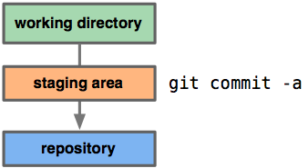

Miért jobb a Git, mint X |
Ez az oldal azért jött létre, mert mostanában úgy tűnik rengeteg
időt töltök azzal, hogy a gitezőket védem a fanbojista,
bandwagonista és koolaid-szomj vádakkal szemben.
Itt van tehát, hogy miért váltanak emberek Gitre X-ről, és miért
kellene neked is váltanod.
A megtekintéshez csupán kattints egy okra.
hg
bzr
svn
perforce
Olcsó lokális branch-ek
A Git branch-elő modellje talán a legfontosabb jellemző, ami
igazán kiemeli az összes többi verizókövető rendszer közül.
Ez teljesen eltér az összes többi modelltől, amivel itt
összehasonlítom, és amelyek közül a legtöbb azt az elvet ajánlja,
hogy a legjobb branch igazából a repository klónozása egy új
könyvtárba.
A Git nem így működik. Git segítségével több lokális branch-et
tarthatsz fenn, amelyek teljesen függetlenek egymástól. Ezen
fejlesztési vonalak létrehozása, egyesítése és törlése csupán
másodpercekbe kerül.
Ez azt jelenti, hogy olyan dolgokat tehetsz, mint például:
- Létrehozol egy új branch-et, hogy kipróbálhass egy új ötletet, néhányszor commitolsz, visszaváltasz oda, ahonnan branch-eltél, egy patch-et alkalmazol, visszaváltasz a kisérletező helyre, és beolvasztod.
- Fenntartasz egy branch-et, amiben mindig csak az éles rendszerbe kerülő dolok vannak, egy másikat amibe a tesztelésre kerülő munkákat olvasztod be, és több kisebbet a mindennapi feladatokra.
- Minden újabb feladatra, amelyen dolgoznod kell új branch-et hozol létre, hogy gond nélkül váltogathass közöttük. Ezek után mindegyiket törlöd, amikor az adott dolog beolvasztásra kerül a főágban.
- Létrehozol egy új branch-et kísérletezésre, majd rájössz, hogy az úgy nem fog működni, és ezért egyszerűen kitörlöd, lemondva az abban végzett munkádról. Ezt az egészet pedig senki más nem látja (akkor sem, ha közben más branch-eket push-oltál).

Fontos, hogy amikor egy távoli repository-ba push-olsz, akkor
nem kell minden branch-et push-olnod. Megoszthatod
csak az egyik branch-edet, nem pedig az összeset. Ez hajlamos
felszabadítani az embereket, hogy új ötleteket próbáljanak ki
anélkül, hogy annak megtervezésén aggódnának, hogy az mikor és
hogyan lesz beolvasztva, vagy megosztva másokkal.
Lehet módot találni arra, hogy ezek közül párat
megtegyünk más rendszerekkel, de az ehhez szükséges munka sokkal
bonyolultabb és hibára hajlamosabb. A Git ezt a folyamatot
elképesztően könnyűvé teszi, és a legtöbb fejlesztő esetében
megváltoztatja azt, ahogyan dolgozik, miután ezt megtanulta.


svn
perforce
Minden lokális
Ez alapvetően igaz minden elosztott verziókövető rendszerre, de
tapasztalatom szerint Git esetében ez még inkább igaz. Nagyon
kevés dolog van a 'fetch', 'pull' és 'push' parancsokon kívül,
ami bármilyen módon a merevlemezeden kívül mással is kommunikálna.
Ez azon túl, hogy a legtöbb műveletet sokkal jobban felgyorsítja,
mint amihez hozzászoktál, azt is lehetővé teszi, hogy offline
végezd a munkáidat. Ez lehet, hogy nem tűnik olyan nagy dolognak,
de engem mindig ledöbbent, hogy igazából milyen gyakran dolgozok
offline. Nagyon produktív dolog képesnek lenni branch-elésre,
merge-ölésre, commitolásra és a projekt történetének
böngészésére amíg mondjuk repülőn, vagy vonaton ülsz.

Még a Mercurial esetében is általános parancsok, mint az
'incoming' és 'outgoing' a szerverrel kommunikálnak, míg Git
esetében a szerveren található összes adatot 'fetch'-elheted
mielőtt átmész offline módba, és csinálhatsz összehasonlításokat,
beolvasztásokat és logot azokkal az adatokkal, amik a szerveren
vannak, de még nem találhatóak meg a lokális branch-eidben.
Ez azt jelenti, hogy nagyon könnyű másolatokat fenntartani nem
csak a saját branch-eidből, hanem mindenki más branch-eiből is,
aki veled együtt dolgozok a Git repository-dban anélkül, hogy ez
megkavarná a saját dolgaidat.
bzr
svn
perforce
A Git gyors
A Git gyors. Mindenki – még más rendszerek megrögzött
követői közül legtöbb is – általánosan elismeri a Gitnek
ezt a címét. Git esetében minden művelet lokálisan megy végbe,
emiatt előnyt élvez az SVN-nel és Perforce-szal szemben, amely
rendszerek esetében bizonyos műveletekhez hálózati elérés
szükséges. Azonban más elosztott verziókövető rendszerekhez
hasonlítva is a Git meglehetősen gyors.
Ez egyrészt valószínűleg amiatt van így, mert a Linux kernel
kezelésére építették, ami azt jelenti, hogy első naptól kezdve
hatékonyan kellett kezeljen nagy repository-kat is. Ráadásul
a Gitet C-ben írták, csökkentve ezzel a magasabb színtű
nyelvek futtatókörnyezetének tulajdonított többletköltséget.
Egy másik ok, ami miatt a Git ilyen gyors az, hogy a vezető
fejlesztői ezt az alkalmazás tervezésekor is már célként
tűzték ki.
Az alábbiakban néhány teljesítményteszt eredményei láthatóak,
amelyet a Django keretrendszer forráskódjával végeztem három
különböző verziókövető rendszeren: Git, Mercurial és Bazaar.
Ezek közül néhány dolgot SVN-nel is teszteltem, de higgyétek el,
sokkal lassabb (viszonyításként vegyétek a Bazaar eredményeit,
és adjátok hozzá a hálózat késleltetését).
|
|
|
|
|
A végeredmény, hogy az új fájlok hozzáadásán kívül mindenben
a Git volt a leggyorsabb. (Illetve még nagyon nagy commitok
esetében a Hg nagyjából hasonlóan teljesített, de a commit, amit
teszteltem olyan nagy volt, hogy elég valószínűtlen, hogy
valami hasonlót kell majd csinálnod. A normális commitok sokkal
gyorsabbak Gittel.)
| Git | Hg | Bzr | |
|---|---|---|---|
| Init | 0.024s | 0.059s | 0.600s |
| Add | 8.535s | 0.368s | 2.381s |
| Status | 0.451s | 1.946s | 14.744s |
| Diff | 0.543s | 2.189s | 14.248s |
| Tag | 0.056s | 1.201s | 1.892s |
| Log | 0.711s | 2.650s | 9.055s |
| Commit (nagy) | 12.480s | 12.500s | 23.002s |
| Commit (kicsi) | 0.086s | 0.517s | 1.139s |
| Branch (hideg) | 1.161s | 94.681s | 82.249s |
| Branch (meleg) | 0.070s | 12.300s | 39.411s |
A hideg és meleg branch-elő számok a repository első és második
branch-eléséhez tartoznak, ahol a második esetében a branch-elés
friss diszk cache-sel történtek.
Meg kell még jegyezni, hogy bár az 'add' művelet sokkal lassabb,
ez egy masszív 'add' művelet volt (több, mint 2000 fájl).
A legtöbb ember mindennapi munkájának nagy részében az 'add'
művelet mindegyik mért rendszer esetében csak a másodperc
töredékéig tart. Az összes többi mért művelet (talán még a nagy
commitot kivéve) olyan dolgokat vesz figyelembe, amelyekkel
napról napra talákozhatsz.
Ezeket a számokat egyáltalán nem nehéz reprodukálni. Egyszerűen
klónozd le a Django projektet bármelyik rendszerben és próbáld ki
mindegyikben ugyanezeket a parancsokat.
git clone git://github.com/brosner/django.git dj-githg clone http://hg.dpaste.com/django/trunk dj-hgbzr branch lp:django dj-bzrsvn checkout http://code.djangoproject.com/svn/django/trunk dj-svn
svn
A Git kicsi
A Git nagyon jó a tárterület spórolásban. A Git könyvtárad
(általában) alig lesz nagyobb egy SVN checkout-nál – néhány
esetben akár kisebb is lehet (úgy tűnik sok minden kerülhet
azokba a .svn könyvtárakba).
Az alábbi számok a Django projekt félhivatalos tükrözéseinek
ugyanazon pontjából készült klónjait tükrözik.
| Git | Hg | Bzr | SVN | |
|---|---|---|---|---|
| Csak a repository | 24M | 34M | 45M | |
| A teljes könyvtár | 43M | 53M | 64M | 61M |
hg
bzr
svn
perforce
A staging area
Más rendszerekkel szemben a Git rendelkezik egy ún. "staging area"
vagy másnéven "index" résszel. Ez egy átmeneti terület, ahol
commitálás előtt összerakhatod a commitodat, hogy az úgy nézzen
ki, ahogyan szeretnéd.
A nagyszerű dolog a staging area-val kapcsolatban, és ami kiemeli
a Gitet az összes többi verziókövető rendszer közül az az, hogy
ahogy végeztél néhány fájllal, egyszerűen berakhatod az indexbe,
és commitolhatod őket anélkül, hogy az aktuális könyvtárban lévő
összes módosított fájlt commitálnád, és nem is kell egyesével
felsorolni őket commitáláskor.

Ez egyben lehetővé teszi azt is, hogy egy módosított fájl csak
bizonyos részeit rakd be az indexbe. Vége azoknak a napoknak,
hogy két logikailag különálló módosítást hajtasz végre egy fájlon,
mielőtt ráeszmélnél, hogy egyiket elfelejtetted commitolni.
Mostmár lehetőséged van arra, hogy csak az aktuális commithoz
szükséges módosítást rakd be az indexbe, és a másikat a következő
commitra hagyd. Ez a képesség a fájlon elvégzett annyi
módosítást le tud kezelni, amennyire csak szükséged van.
Természetesen a Git egyben nagyon egyszerűvé teszi ennek
a képességnek a figyelmen kívül hagyását, ha nincs szükséged ilyen
szintű kontrollra. Csak rakj egy '-a' kapcsolót a commit
parancshoz, hogy minden fájl minden módosítása bekerüljön
az indexbe.

svn
perforce
Distributed
One of the coolest features of any of the Distributed SCMs, Git included, is that it's
distributed. This means that instead of doing a "checkout" of the current tip of
the source code, you do a "clone" of the entire repository.
This means that even
if you're using a centralized workflow, every user has what is essentially a full
backup of the main server, each of which could be pushed up to replace the main server
in the event of a crash or corruption. There is basically no single point of failure
with Git unless there is only a single point.
This does not slow things down much, either. On average, an SVN checkout is only marginally
faster than any of the DSCMs. Of the DSCMs I tested, Git was the fastest.
|
|
|
svn
perforce
Any Workflow
One of the amazing things about Git is that because of its distributed
nature and super branching system, you can easily implement pretty
much any workflow you can think of relatively easily.
Subversion-Style Workflow
A very common Git workflow, especially from people transitioning
from a centralized system, is a centralized workflow. Git will
not allow you to push if someone has pushed since the last time
you fetched, so a centralized model where all developers push to
the same server works just fine.

Integration Manager Workflow
Another common Git workflow is where there is an integration
manager—a single person who commits to the 'blessed' repository,
and then a number of developers who clone from that repository,
push to their own independent repositories and ask the integrator
to pull in their changes. This is the type of development model
you often see with open source or GitHub repositories.

Dictator and Lieutenants Workflow
For more massive projects, you can setup your developers similar to
the way the Linux kernel is run, where people are in charge of a
specific subsystem of the project ('lieutenants') and merge in all
changes that have to do with that subsystem. Then another integrator
(the 'dictator') can pull changes from only his/her lieutenants and
push those to the 'blessed' repository that everyone then clones from
again.

Again, Git is entirely flexible about this, so you can mix and
match and choose the workflow that is right for you.
hg
svn
perforce
GitHub

I may be biased here, given that I work for
GitHub,
but I added this section anyway because so many people say that
GitHub itself was specifically why they chose Git.
GitHub is a reason to use Git for many people because it is more
like a social network for code than a simple hosting site. People
find other developers or projects that are similar to the things
they are doing, and can easily fork and contribute, creating a very
vibrant community around Git and the projects that people use it
for.
There exist other services, both for Git and for the other SCMs,
but few are user-oriented or socially
targeted, and none have anywhere near the user-base.
This social aspect of GitHub is killer, and this in combination of the above features
make working with Git and GitHub a great combination for rapidly
developing open source projects.
This type of community is simply not available with any of the other SCMs.
perforce
Könnyen tanulható
Ez nem mindig volt így — a Git korai változatai nem egy verziókövető rendszerre
emlékeztettek, hanem sokkal inkább egy halom eszközre, amelyek segítségével
elosztott módon tudtál dolgozni egy verziózott fájlrendszeren.
Mára azonban a parancskészlet és a tanulási görbe éppen olyan jó, mint más
verziókövető rendszerek esetében, sőt, némely rendszereknél még jobb is.
Mivel elég nehéz lenne objektíven bizonyítani mindezt megfelelő kutatások híján,
egyszerűen bemutatom a Mercurial és a Git alapértelmezett 'help' menüje közötti
különbségeket. Kiemeltem azokat a parancsokat, amelyek (többé-kevésbé) megegyeznek
a két rendszerben. (A Hg esetében a 'hg help' kiadása mintegy 40 parancs listáját
eredményezi.)
Mercurial súgóadd add the specified files ... annotate show changeset informati... clone make a copy of an existi... commit commit the specified fil... diff diff repository (or sele... export dump the header and diff... init create a new repository ... log show revision history of... merge merge working directory ... parents show the parents of the ... pull pull changes from the sp... push push changes to the spec... remove remove the specified fil... serve export the repository vi... status show changed files in th... update update working directory |
Git súgóadd Add file contents to the index bisect Find the change that introduce... branch List, create, or delete branches checkout Checkout a branch or paths to ... clone Clone a repository into a new ... commit Record changes to the repository diff Show changes between commits, ... fetch Download objects and refs from... grep Print lines matching a pattern init Create an empty git repository log Show commit logs merge Join two or more development h... mv Move or rename a file, a direc... pull Fetch from and merge with anot... push Update remote refs along with ... rebase Forward-port local commits to ... reset Reset current HEAD to the spec... rm Remove files from the working ... show Show various types of objects status Show the working tree status tag Create, list, delete or verify... |
A Git 1.6-os verzióját megelőzően minden Git parancsot a futtatási path-ban
kellett kiadni, ami sokak számára elég zavarbaejtő volt. Bár a Git még
felismeri ezeket a korábbi parancsokat, ma már elég, ha a 'git' parancs
része a path-nak. Ha most összeveted a Mercurial-t és a Git-et, láthatod,
hogy a Git szinte teljesen megegyező parancs- és súgókészlettel rendelkezik —
UI szempontból mostanra szinte már alig észrevehetők a különbségek.
Manapság elég nehéz lenne amellett érvelni, hogy Mercurial vagy a Bazaar használatát
egy hangyányival is könnyebb megtanulni, mint a Git-ét.